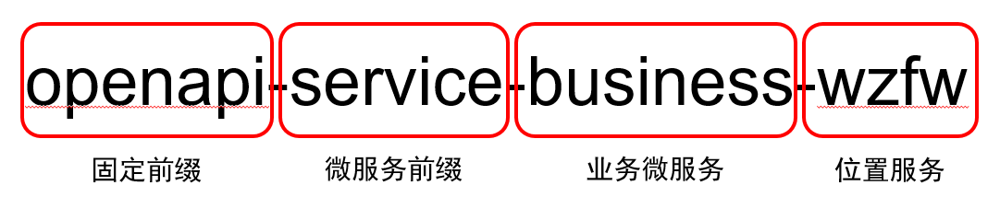

OpenAPI微服务接入规范
OpenAPI采用了微服务的架构，基于Spring Cloud为微服务系统中相互依赖的服务提供了丰富的连接选项。
接口规范
OpenAPI采用了微服务的架构，每个微服务使用统一的对外接口规范，不需要考虑安全与负载均衡等其它因素，只需要关注自己的业务逻辑即可，参数与对外返回应该保持一致；
微服务统一命名
每个微服务都有一个统一的名称作为服务唯一标识符，也作为服务注册发现，负载均衡，服务熔断等功能的标识，OpenAPI将为微服务提供统一的查询界面，通过唯一的微服务名称查询服务的功能、调用方式以及参数：

样例：
- openapi-service-business-wzfw 位置服务API
- openapi-service-business-test 其它业务API
- openapi-service-compute-adhoc 计算API-即席分析
- openapi-service-storage-hbase 存储API-hbase
微服务端口规范
接入的微服务端口号都在8000-9000之间，但不同类型的服务处在不同的区间，其中，存储API的端口默认为 8100-8200，业务API的端口默认为 8200-8300，计算API的端口默认为 8300-8400，其它类型微服务API的端口默认为 8400-8500
接口命名
微服务开发的时候，不需要在自己的URL中指定URL前缀，URL前缀由网关层统一路由，只需要指定接口即可
微服务API的接口应统一以小写字符串为接口名，不要用下划线，而用“-”，
比如：GET /current-location
注：网关层统一URL前缀路由方案：每个业务的URL前缀应该与微服务的统一命名有一致的对应关系，对应统一命名的后两段，比如：
位置服务： 统一命名：openapi-service-business-wzfw 那它的URL前缀就是：/business/wzfw/
参数命名
除了微服务自己的请求参数，每个微服务都会接收到一个可选的 OpenAPI的请求id openRequestId，其它参数不能有相同的参数名称。openRequestId 是由Open网关层生成的字符串类型，代表用户的这一次请求，便于问题追踪与故障排查以及其它需求；
除此之外，没有其它限制
返回规范
返回接口也均推荐采用RestFul API的风格，具体有以下几点约定：
响应码永远是200
服务端在成功接收到客户端的请求之后，在能够处理和捕获的情况下，http头的响应码永远是200，具体成功与否及进一步的信息放入返回的内容。如果客户端获取到的返回码不是200，代表链路上某一个环节出了问题。
不允许抛出异常
微服务的最外层不允许抛出异常，最好捕获所有指定的异常并主动返回，如果有未知异常发生，则建议捕获后将异常作为message信息返回；
统一返回格式
所有返回都要有 code、openRequestId、data、message这四个参数，String方式返回以下形式：
注意，这里的code返回码，应该遵循统一的格式。
比如：GET /business/wzfw/current-locationd的正确返回：
错误返回：
统一错误码（持续更新）
统一日志、收集与分析
为了对每个微服务进行日志的统一分析，我们使用了基于ELK技术栈的日志收集与分析的系统，为了更好的进行统一日志收集与分析，微服务需要遵循统一的约定来记录日志，各个微服务只需要将日志记录到本地文件中即可，我们会统一进行数据抓取，数据收集与数据分析；
根据日志作用，将日志具体分成以下3类，分别放在指定目录的不同文件夹下：
- 业务日志
OpenApi业务调用日志，为后期日志分析，提供数据源。 - 普通日志
开发、调试相关日志，方便程序排除故障，程序调优等。 - 组件日志
系统内部相关组件日志，例如Spring日志，tomcat日志、eureka日志、ribbon日志、hystrix日志等
以已经开发完成的位置服务为例：
业务日志 ./logs/business/wzfw/stat/ 使用统一的格式统计web层的请求，便于数据分析与统计
普通日志 ./logs/business/wzfw/code/ 开发者在代码中用于debug的日志，便于排查
组件日志 ./logs/business/wzfw/other/ Spring等其它引用框架自带的日志，作为留存
其中业务日志是必须需要的；
接入规范
为了更好地进行微服务的开发，在遵循上述接口规范的基础上，在技术层面上会简要列出下述接入规范，供开发者开发以及已经开发好的项目接入进行参考；
注：与基于Dubbo框架的微服务架构不同，基于spring-cloud的OpenAPI微服务架构做得的不仅仅是协议的转换，还提供了服务自动注册与发现，自动负载均衡，服务自动熔断，统一日志收集与分析以及监控告警等功能，在项目庞大的时候会引入统一配置管理。因此，为了更好更简单地使用这些额外的功能，推荐使用Java技术栈的spring-boot框架进行开发，会达到事半功倍的效果。当然，OpenAPI也支持其它语言与框架的接入。
使用spring-boot接入
Spring Boot让我们的Spring应用变的更轻量化，有经验的Java程序员一天就可以上手，Java项目改造为spring-boot项目也很简单，spring-boot的主要优点如下：
- 为所有Spring开发者更快的入门
- 开箱即用，提供各种默认配置来简化项目配置
- 内嵌式容器简化Web项目
- 没有冗余代码生成和XML配置的要求
项目改造为spring-boot工程
我们大部分的微服务都是以Java开发的，首先希望最好的接入方案是将项目改造为spring-boot工程，使用spring-boot进行开发，简单高效，只需要了解业务逻辑即可，这个是效果最好的接入方案，建议采用下列方式引入spring boot依赖
微服务统一命名
|
|
通过spring.application.name属性，我们可以指定微服务的名称后续在调用的时候只需要使用该名称就可以进行服务的访问。
接入服务发现与服务注册
对于spring-boot来说，接入服务发现与服务注册功能和简单，只需要以下两步：
pom.xml中增加依赖
12345<!-- 添加Eureka的依赖 --><dependency><groupId>org.springframework.cloud</groupId><artifactId>spring-cloud-starter-eureka</artifactId></dependency>配置文件中增加一行eurake的配置
12// 指定注册中心的地址eureka.client.serviceUrl.defaultZone=http://discovery:8761/eureka/
这样，简单的两步操作，就可以使你的服务被微服务统一管理了。
使用负载均衡功能
有些微服务访问压力比较大，需要被多个负载均衡同时处理业务，需要负载均衡的能力，当你的服务注册到eurake中后，使用负载均衡功能非常简单，只需要换一个机器，将你的服务部署, 然后注册到OpenAPI就可以了，OpenAPI网关这里会自动通过 ribbon对你的服务进行负载均衡。
负载均衡的默认策略是进行轮寻负载，如果有独特的负载均衡方式，请联系OpenAPI管理员进行其它的负载均衡方案。
使用断路器功能
当某个服务单元发生故障（类似用电器发生短路）之后，通过断路器的故障监控（类似熔断保险丝），向调用方返回一个错误响应，而不是长时间的等待。这样就不会使得线程因调用故障服务被长时间占用不释放，避免了故障在分布式系统中的蔓延。OpenAPI基于开源的Hystrix来实现断路器的功能；
使用断路器功能，微服务开发者不需要修改任何代码，只需要为OpenAPI管理员提出需求，制定熔断策略，我们会对代码进行非侵入式的熔断管理，从而防止错误在整个系统中的蔓延；
使用统一日志收集与分析服务
其中，如果使用Spring-boot开发的话，统一使用 slf4j + logback 的技术来进行日志记录，通过统一的logback配置文件可以极大地提高开发效率；业务日志统一使用面向切面编程技术（AOP）来记录日志。如果用python相关web框架实现微服务的话，也要做到统计日志格式的统一。
具体日志格式以附件中 logback.xml 的配置文件为准。
Dubbo微服务接入
王超
Python微服务接入
黄泽实例
其它微服务接入
将 eurake的原理与API介绍给他们